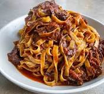

Ragu
Home
Ragu is warming and satisfying it takes time but so do all good things

Ingredients:
- 250g Beef brisket or chuck
- 250g Pork filet or shoulder
- 1 Medium Red onion
- 1 stick celery or leak
- 1 large Carrot
- 500ml Beef Stock
- 600ml Passata or tinned plum tomatoes
- 2 tablespoons Extra Virgin Olive Oil
- Tablespoon Tomatoe Paste
- 3 Bay Leaves
Method:
- Dice Onion, Carrots and Leak/Celery
- Sweat Onion, Carrot and Celery/Leak over medium heat in oil
- Add Tomatoe paste to diced veg once it becomes soft
- Add Passatta/Tinned Tomatoes and Beef Stock stick blend until desired consistency
- Leave sauce on low heat add bay leaves
- Chop meat into medium to large pieces and sear in hot pan
- Add meat and any juices into the sauce
- bring to simmer cook for 3 to 4 hours
- Shred meat then continue to cook until sauce is desired thickness (Extra water or stock can be added if too thick